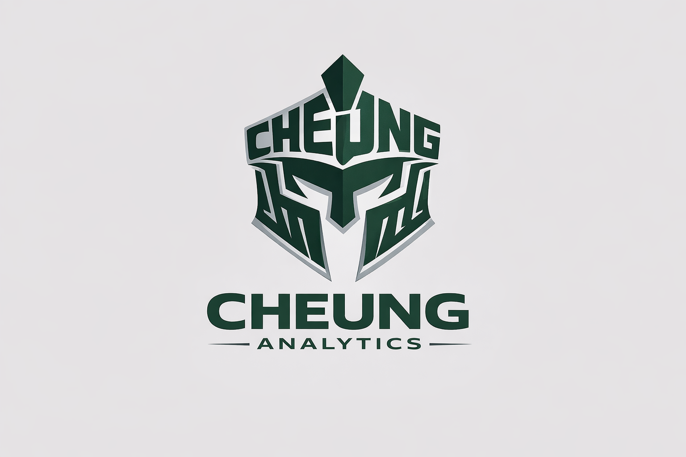
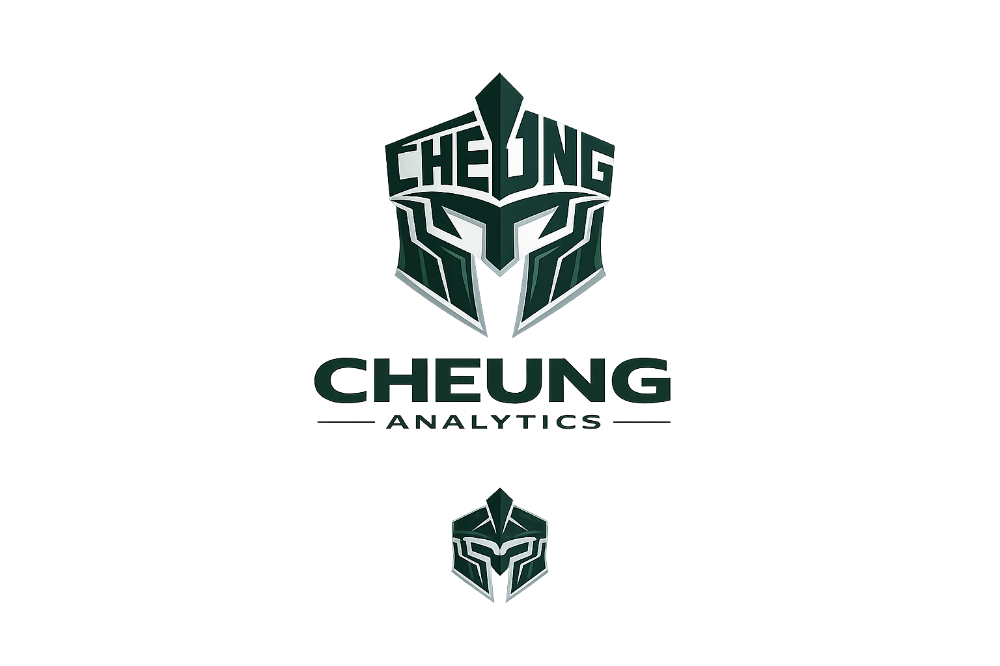

Format 01
Daily Leaders
Quick cards for home runs, exit velocity, barrels, whiffs, and run value.

Cheung AnalyticsMLB data, explained fast
Cheung Analytics turns MLB stat signals into clean charts, leaderboards, and short-form insights built for X and the web.

Latest generated draft
Run python scripts\generate_draft.py --season 2026 to create the first live draft.
Format 01
Quick cards for home runs, exit velocity, barrels, whiffs, and run value.
Format 02
Rolling 7-day team and player trends with simple chart explanations.
Format 03
Short website posts that explain why a stat matters and link back to the X post.
Built responsibly
The goal is to create original analysis from publicly available baseball data while avoiding unlicensed MLB/team marks, player photos, and scraped screenshots. Every graphic is designed around Cheung Analytics branding so the account can grow into a recognizable platform.